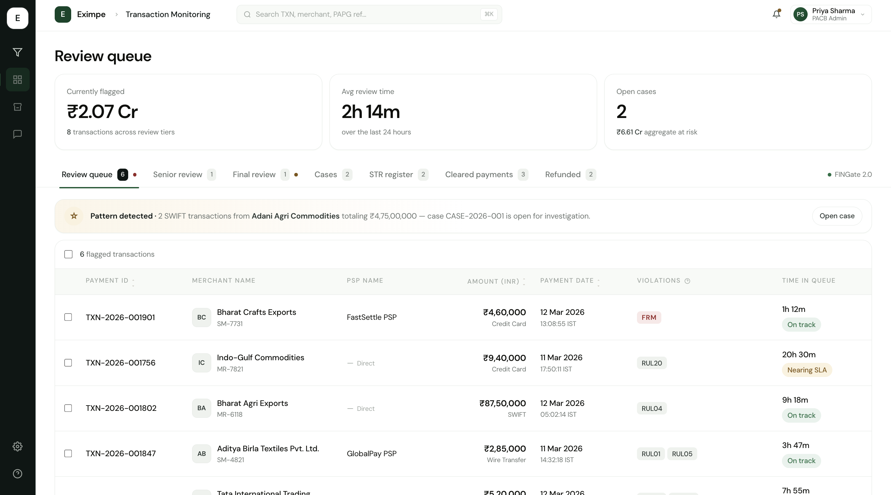
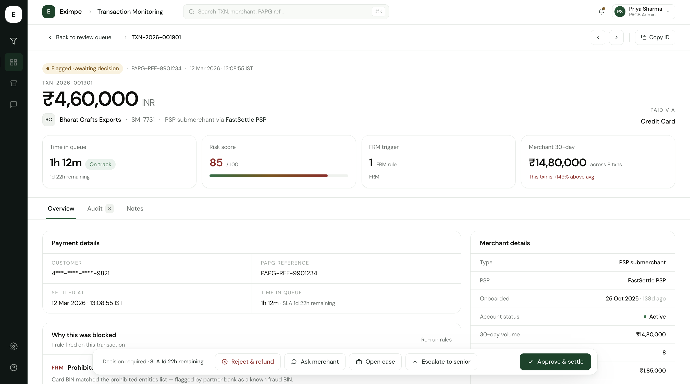
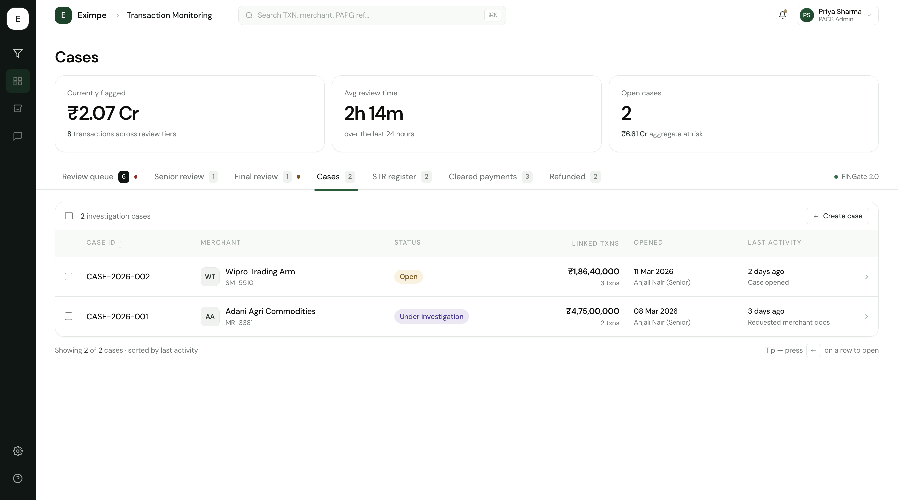
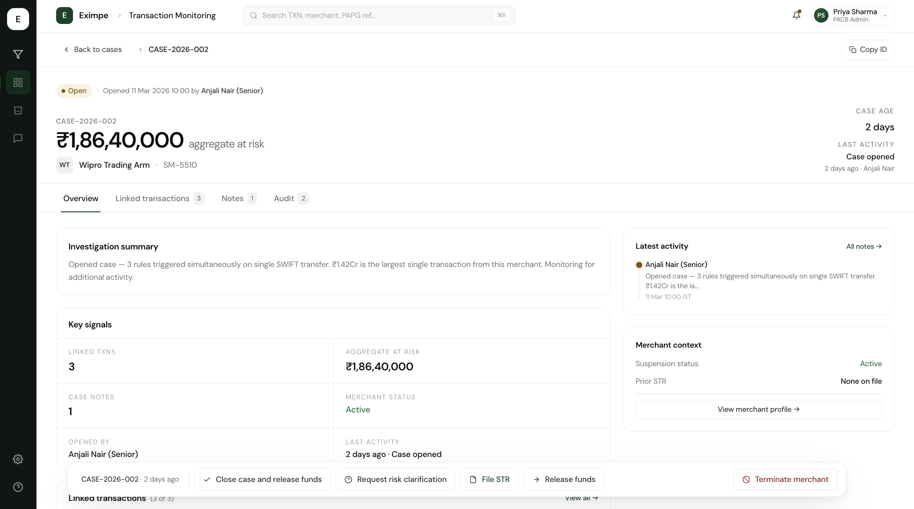
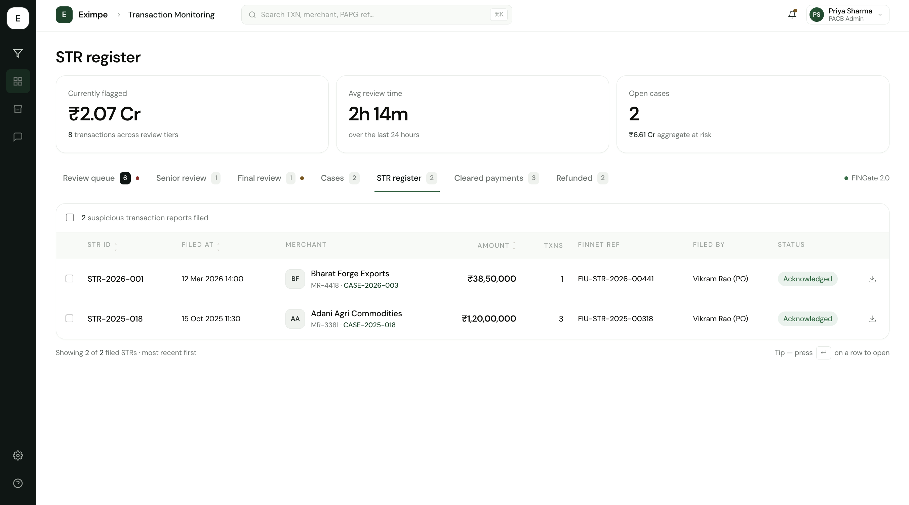
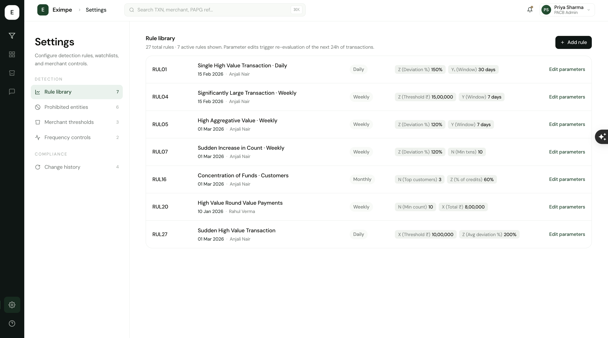

Bringing transaction monitoring in-house.
Eximpe is a cross-border payments company. Every risky payment passes through a Transaction Monitoring System (TMS) where compliance officers decide whether to allow it. For two years, Eximpe rented the TMS from a partner. This project replaced it in-house — designed around how the team actually works. I led design end-to-end and prototyped in code.
How a payment moves through Eximpe
Most payments clear automatically. The ones that don't are why TMS exists — and why I designed it.
What we walked into.
Compliance officers reviewed flagged payments daily and chose to allow, request proof, escalate, or refund — for two years inside a slow third-party tool where every change went through a vendor. The brief: rebuild it in-house, make it feel clearer than the tool they already trusted.
Three workflow patterns the partner tool didn't anticipate.
Walkthroughs with the PACB Admin and wider team surfaced three small behaviours that kept repeating — and reshaped the brief.
Operators re-sorted the queue by review deadline every time it loaded.
The partner tool defaulted to "most recent first," but compliance work runs on review-deadline urgency. So the team re-sorted manually — every single load. The right default isn't a preference; it's the deadline clock, baked in.
Compliance officers always opened the side panel before approving a large payment.
Inline "Approve" buttons would have looked faster, but no officer trusts a one-click approval on a high-value payment. The side panel isn't friction — it's where the decision actually happens. The new design keeps it that way, on purpose.
The team kept a side spreadsheet of merchants that kept popping up.
The partner tool reviewed each payment in isolation, but compliance work is about patterns — one merchant flagged four times in two weeks means something. The new design surfaces a merchant's recent flag history inside the review panel. No side spreadsheet needed.
One decision did most of the work.
Design the row, not the table.
The partner tool exposed ~40 fields per transaction. I drew a hard line between scan-time (6 fields, visible in the row) and decision-time (everything else, behind a click). One split dissolved the most-cited complaint: "I can't tell what matters."
Second call: split the queue by who can act. Compliance runs as four roles:
- Compliance Officer (CO) — first reviewer; clears routine flags, requests merchant proof on the uncertain ones.
- Senior CO — handles what the CO can't resolve, plus higher-value payments.
- Principal Officer (PO) — regulatory sign-off for sensitive cases (sanctions hits, large reversals).
- PACB Admin — owns the TMS itself: cross-role visibility, configures rules, can step in for any tier. All screens below are from a PACB-Admin login, which is why every tab shows.
Scoping each role's view kills the most dangerous failure mode: a junior reviewer clearing a payment that needed regulatory sign-off.
The shipped TMS, screen by screen.
Six screens, in the order the team moves through them. Framed from the PACB Admin view — the only role that sees every queue. Screens are illustrative (production visuals under NDA); workflow and hierarchy are exactly what's live.
Where the day starts.
Overnight, the Rules Engine flags ~1% of payments. Each lands here for a CO to clear, refund, request proof, escalate, or open a case.

-
Start with the three numbers, not the table.
Three top-line metrics — flagged amount, average review time, open cases — answer "where do we stand?" before anyone touches a row.
-
Surface patterns, not just rows.
The queue links related transactions automatically — five separate flags become one case to investigate.
-
Sort by deadline, not by time received.
Every flag has a regulator deadline, so the closest ones sort to the top — urgency comes from the data, not memory.
A single payment, in 30 seconds.
Click any row in the queue, you land here. Built so a Compliance Officer can scan, decide, and act in under a minute — without losing the audit trail.

-
Make the most decision-relevant fact the loudest.
Amount sits at the visual centre, not buried in a side panel — "should I even care?" is answered before the page finishes loading.
-
Answer "is this normal?" before anything else.
Four context tiles compare the transaction to the merchant's own baseline, so anomalies stand out without any manual lookup.
When one transaction isn't the whole story.
A Case is an investigation workspace — a folder that lives across multiple transactions, possibly over weeks. Opened when a yes/no decision on a single payment isn't enough.

-
Make the unit of work an investigation, not a transaction.
A single payment is rarely suspicious; three together usually are. Cases gives investigations a workspace that spans transactions, parties and time — instead of a spreadsheet.
-
Show momentum, not just status.
A Last Activity signal surfaces stale work visually, so investigations waiting on a nudge don't quietly age.
The investigation surface.
Click a case row, you land in its workspace. Everything an investigator (or auditor) needs to understand the case lives here — investigation summary, linked transactions, evidence, the full event log.

-
Force a written rationale at case opening.
Whoever opens a case writes the summary first — so if the analyst rotates off, the next person doesn't reverse-engineer the reasoning.
-
One glanceable grid, six signals.
Linked txns · aggregate at risk · merchant status · opened by · last activity — six signals answer "should I act now?" without scrolling.
-
Group case actions by what they affect.
Funds-level actions sit together; the irreversible "terminate merchant" is set apart — grouping that prevents the wrong action under pressure.
Filed reports — the regulator's record.
Once a case confirms wrongdoing, the Principal Officer files an STR (Suspicious Transaction Report) with India's regulator (FIU-IND) via the FINGate 2.0 portal. The register is the audit-trail home for every filing.

-
Treat filed reports as immutable records.
Once filed, no one — not even the PO — can edit an STR, so rows aren't interactive. The design matches what the data actually is.
-
The case is the way back, not the STR itself.
An STR is just a summary — the investigation lives in its case, so the case link is the primary entry point on every row.
-
One-click evidence pack export.
One export icon generates the full sealed pack — KYC, linked transactions, audit trail, acknowledgement — instead of hours of manual collection.
The configurable brain of the TMS.
Every flag in the Review queue traces back to a rule here. 27 in the catalog, 7 currently active. PMLA requires PO sign-off to activate a new rule — every change shows up in Change history.

-
Standardise the rule vocabulary across the catalog.
Every rule uses the same four variables (X · Y · Z · N) — one mental model across 27 rules, learned once instead of per-rule.
-
Keep two rule types, deliberately.
Two rule types stay separate: regulatory hard limits vs behavioural patterns — so it's always clear which the team can tune and which are fixed by law.
-
Lift Settings out of TMS.
Rules started nested inside TMS, but Recon and Risk needed the same config — so Settings moved to a shared org-level area. (See Iterations.)
Two structural calls I went back and fixed.
Two structural calls that reshaped how the system is organised — both reframed mid-build.
Settings shouldn't live inside TMS.
- First instinct
- Nest rule config + role management inside TMS — it's where the rules are used.
- Where it broke
- Reconciliation and Risk would need the same roles, merchant directory, notification preferences.
- The reframe
- Pulled config into a shared org-level Settings area. TMS reads from it instead of owning it. See Screen 06 above.
STR-filed cases should leave the Cases tab.
- First instinct
- Keep STR-filed cases in the Cases tab forever — the case is the investigation record, so it should stay findable. The AI agreed.
- Where it broke
- STR-filed work isn't CO review anymore — it's PO coordination with the regulator: export evidence, mail FIU-IND, await verdict. Different audience, different data (FINnet refs, STR statuses). One tab made both the queue and the register worse.
- The reframe
- STR register became its own surface. The case detail page stays the workspace for both worlds — daily review AND post-verdict actions like Terminate merchant. Two entry points: Cases tab for active review, STR register for regulator coordination.
What changed.
Shipped; migration off the partner is staged by merchant cohort, so these numbers are scoped to the migrated cohort, not extrapolated. Measured via the team's Amplitude integration over the first month post-launch.
~280/day
PAYMENTS ROUTED
Through the in-house TMS, across the migrated merchant group. Every one screened by the same 27 rules + fraud check before it settles.
11
HIGH-RISK MERCHANTS · FIRST 30 DAYS
Patterns the partner tool was collapsing into a generic "Review" — FX-corridor anomalies, repeat-payee mismatches, structured-amount splits.
~6min
MEDIAN REVIEW TIME
Internal target was <10 min per review. On the partner tool the same review took 15–20 min — most of it spent flipping between the queue and external context.
100%
COMMISSION ELIMINATED · MIGRATED COHORT
Each subsequent cohort removes its per-transaction commission line from the run-rate as it completes migration.
0
CROSS-ROLE ACTION LEAKS
Since launch. The role-scoped queue model has held — no CO clearing a row that should have escalated, no PO-level approval triggered from the wrong seat.
What I'm taking forward.
Three things this project actually taught me — beyond the surface, beyond the screens.
- Shadowing real workflows beats interviewing about hypothetical ones. The questions an operator doesn't ask are the ones I want to design around.
- AI shortens the loop between decision and code-fidelity — but every wrong call still shows up. Faster tools, same judgement.
- The hardest surfaces are the ones operating under regulation. Designing for the audit trail makes every other decision easier — including the layout itself.